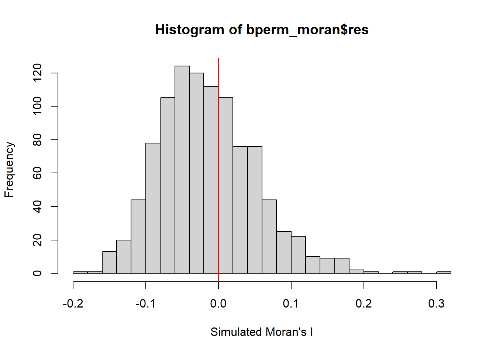
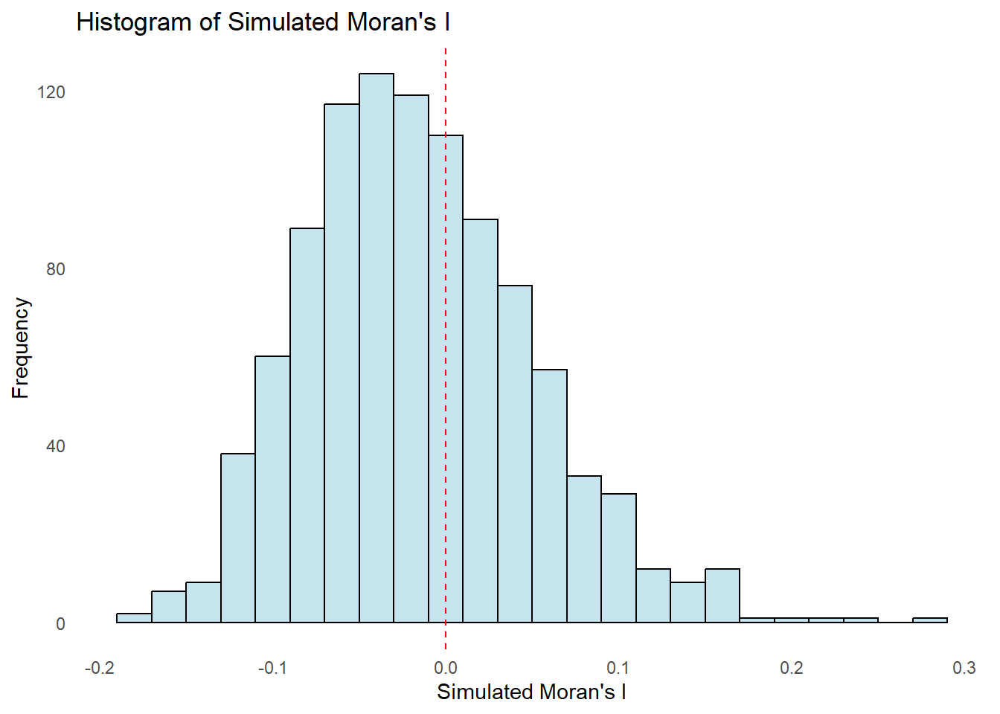
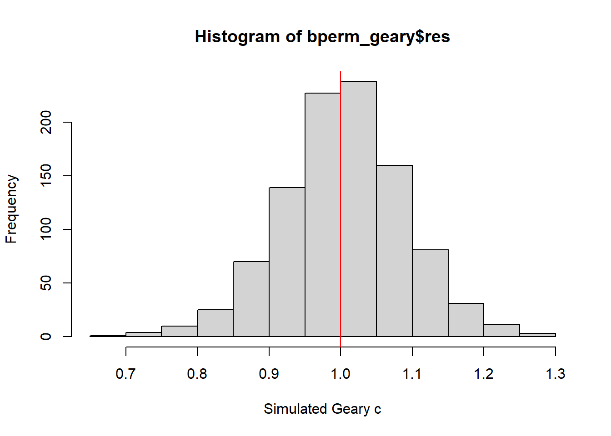
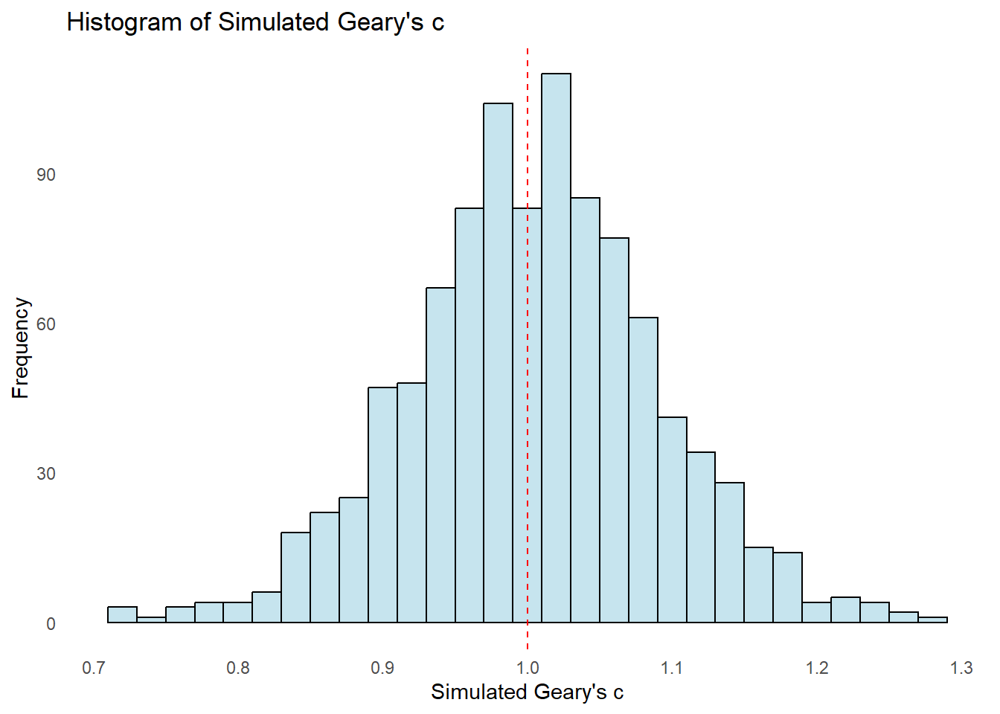

pacman::p_load(sf, spdep, tmap, tidyverse)Hands-on Exercise 2B
9 Global Measures of Spatial Autocorrelation
9.1 Overview
In this page, I show how I had completed the Hands-on Exercise 2B, on computing Global and Local Measures of Spatial Autocorrelation (GLSA) using the spdep package.
The objectives are:
Import geospatial data using appropriate function(s) of sf package;
Import csv file using appropriate function of readr package;
Perform relational join using appropriate join function of dplyr package;
Compute Global Spatial Autocorrelation (GSA) statistics using appropriate functions of spdep package, including:
Plot Moran scatterplot,
Compute and plot spatial correlogram.
Compute Local Indicator of Spatial Association (LISA) statistics for detecting clusters and outliers using appropriate functions spdep package;
Compute Getis-Ord's Gi statistics for detecting hot spot or/and cold spot area using appropriate functions of spdep package; and
Visualise the analysis output using tmap package.
9.2 Getting Started
9.2.1 The Analytical Question
In spatial policy, one of the main development objective of the local government and planners is to ensure equal distribution of development in the province.
Hence, the appropriate spatial statistical methods are applied to study:
Is development evenly distributed geographically?
If no, is there sign of spatial clustering? If yes, where are these clusters?
For this hands-on exercise, the GDP per capita (as a development indicator) of Hunan province in China is studied.
9.2.2 The Study Area and Data
The following data sets are used in this hands-on exercise:
Hunan’s County Boundary Layer. This is a geospatial data set in ESRI shapefile format.
Hunan’s Local Development Indicators 2012. This csv file contains data on selected Hunan’s local development indicators in 2012.
The data sets are placed under two sub-folders:
geospatial (County Boundary Layer), and
aspatial (Local Development Indicators 2012).
These two sub-folders are within the data folder of my Hands-on_Ex2 folder.
9.2.3 Setting the Analytical Tools
The R packages used in this hands-on exercises are:
tmap for thematic mapping;
sf for importing, managing, and processing geospatial data;
tidyverse (i.e. readr, tidyr, dplyr) for performing data science tasks such as importing, tidying, and wrangling data; and
spdep for analysing spatial dependence and spatial relationships in data.
They are loaded into the R environment using the following code:
Student Note: This allows for loading of multiple packages in one line of code.
9.3 Importing Data
9.3.1 Importing shapefile
The st_read() (under sf package) is used to import the geospatial data set: hunan, a polygon feature layer in ESRI shapefile format.
Student Note: The geospatial objects are polygon features. There are a total of 88 features and 7 fields in hunan simple feature data frame. hunan is in wgs84 coordinate system.
hunan = st_read(dsn = "data/geospatial",
layer = "Hunan")Reading layer `Hunan' from data source
`C:\jmphosis\ISSS624\Hands-on_Ex\Hands-on_Ex2\data\geospatial'
using driver `ESRI Shapefile'
Simple feature collection with 88 features and 7 fields
Geometry type: POLYGON
Dimension: XY
Bounding box: xmin: 108.7831 ymin: 24.6342 xmax: 114.2544 ymax: 30.12812
Geodetic CRS: WGS 849.3.2 Importing csv file
The read_csv() (under readr package) is used to import the aspatial data set: hunan_2012, a csv file.
Student Note: The hunan_2012 tibble data frame contains 88 rows and 29 columns. There are two columns with character data - County and City.
hunan2012 = read_csv("data/aspatial/Hunan_2012.csv")9.3.3 Performing Relational Join
The attribute table of the spatial polygons data frame, hunan, is updated using the attribute fields of the tibble data frame, hunan2012 using left_join() (under dplyr package).
Student Note: Without explicitly stating the “by” argument for left_join(), the two tables are joined by the ‘County’ columns.
hunan = left_join(hunan,hunan2012) %>%
select(1:4, 7, 15)
hunanSimple feature collection with 88 features and 6 fields
Geometry type: POLYGON
Dimension: XY
Bounding box: xmin: 108.7831 ymin: 24.6342 xmax: 114.2544 ymax: 30.12812
Geodetic CRS: WGS 84
First 10 features:
NAME_2 ID_3 NAME_3 ENGTYPE_3 County GDPPC
1 Changde 21098 Anxiang County Anxiang 23667
2 Changde 21100 Hanshou County Hanshou 20981
3 Changde 21101 Jinshi County City Jinshi 34592
4 Changde 21102 Li County Li 24473
5 Changde 21103 Linli County Linli 25554
6 Changde 21104 Shimen County Shimen 27137
7 Changsha 21109 Liuyang County City Liuyang 63118
8 Changsha 21110 Ningxiang County Ningxiang 62202
9 Changsha 21111 Wangcheng County Wangcheng 70666
10 Chenzhou 21112 Anren County Anren 12761
geometry
1 POLYGON ((112.0625 29.75523...
2 POLYGON ((112.2288 29.11684...
3 POLYGON ((111.8927 29.6013,...
4 POLYGON ((111.3731 29.94649...
5 POLYGON ((111.6324 29.76288...
6 POLYGON ((110.8825 30.11675...
7 POLYGON ((113.9905 28.5682,...
8 POLYGON ((112.7181 28.38299...
9 POLYGON ((112.7914 28.52688...
10 POLYGON ((113.1757 26.82734...9.3.4 Visualising Regional Development Indicator
A basemap and a choropleth map are prepared usign qtm() (under tmap package) to visualise the 2012 Gross Domestic Product Per Capita (GDPPC).
Student Note: The two different styles used are “equal” and “quantile”. The equal style shows that high GDPPC (in absolute terms) is concentrated in a few counties in the northeast region. The quantile style shows that the top 50% of counties in terms of GDPPC are mainly on the east side of Hunan.
equal = tm_shape(hunan) +
tm_fill("GDPPC",
n = 5,
style = "equal") +
tm_borders(alpha = 0.5) +
tm_layout(main.title = "Equal interval classification")
quantile = tm_shape(hunan) +
tm_fill("GDPPC",
n = 5,
style = "quantile") +
tm_borders(alpha = 0.5) +
tm_layout(main.title = "Equal quantile classification")
tmap_arrange(equal,
quantile,
asp=1,
ncol=2)
9.4 Global Spatial Autocorrelation
The Global Spatial Autocorrelation (GSA) statistics are computed for the study area. Also, Spatial Complete Randomness (SCR) test for GSA is performed.
Student Note: The SCR test for GSR checks if the spatial distribution of GDPPC is entirely random and lacks any systematic spatial pattern. In other words, it assesses whether the observed spatial pattern of the GDPPC deviates significantly from what would be expected under spatial randomness.
9.4.1 Computing Contiguity Spatial Weights
Firstly, the spatial weights of the study area would need to be computed to define the neighbourhood relationships between the geographical units (i.e., county) in the study area.
The poly2nb() (under spdep package) is used to compute contiguity weight matrices for the study area. This function builds a neighbours list based on regions with contiguous boundaries.
The “queen” argument in the function is set to either TRUE (default) or FALSE. The TRUE option will return a list of first order neighbours using the Queen’s continguity criteria.
Student Note: According to Queen’s criteria, two regions are considered neighbours if they share any part of their boundary (even if it is a single point). This results in a more inclusive definition of neighbour relationships.
Student Note: The summary report below shows that there are 88 area units in hunan. The most connected area unit (85) has 11 neighbours. The least connected area units (30 and 65) have only one neighbour each.
wm_q = poly2nb(hunan, queen = TRUE)
summary(wm_q)Neighbour list object:
Number of regions: 88
Number of nonzero links: 448
Percentage nonzero weights: 5.785124
Average number of links: 5.090909
Link number distribution:
1 2 3 4 5 6 7 8 9 11
2 2 12 16 24 14 11 4 2 1
2 least connected regions:
30 65 with 1 link
1 most connected region:
85 with 11 links9.4.2 Row-standardised Weights Matrix
Weights are assigned to each neighbouring polygon. The nb21listw() (under spdep package) is used to convert a neighborhood object, wm_q, to a listw object, rswm_q (style=“W”). This allows row-standardised distance weight matrices to be created, whereby each row sums to 1. The “style” argument influences the specific characteristics of the weights matrix.
For this hands-on exercise, the “style=”W”” is used, each neighboring polygon is assigned equal weight. This is accomplished by assigning the fraction 1/(#ofneighbors) to each neighboring county then summing the weighted income values. While this is the most intuitive way to summarise the neighbors’ values, its downside is that polygons along the edges of the study area will base their lagged values on fewer polygons thus potentially over- or under-estimating the true nature of the spatial autocorrelation in the data.
Student Note:
The “style” argument set to “W” specifies a binary spatial weight matrix, where the presence of a spatial relationship is indicated by 1, and absence by 0. All neighbouring units are considered equal in terms of their impact on the target unit, reflecting a uniform spatial relation
B is the basic binary coding.
C is globally standardised (sums over all links to n).
U is equal to C divided by the number of neighbours (sums over all links to unity).
S is the variance-stabilizing coding scheme proposed by Tiefelsdorf et al. 1999 (sums over all links to n).
The “zero.policy” argument returns lists of non-neighbours when set to TRUE. It means that weight vectors of zero length are inserted for regions without neighbour in the neighbours list. This in turn generates lag values of zero, equivalent to the sum of products of the zero row t(rep(0, length=length(neighbours))) %*% x, for arbitrary numerical vector x of length equal to the number of neighbours. The spatially lagged value of x for the zero-neighbour region will then be zero.
- This ensures that even regions without neighbors are included in the spatial weights matrix, and their spatial lag values are explicitly set to zero. This can be useful in certain analytical contexts where the treatment of regions without neighbours is important for the analysis.
rswm_q = nb2listw(wm_q,
style="W",
zero.policy = TRUE)
rswm_qCharacteristics of weights list object:
Neighbour list object:
Number of regions: 88
Number of nonzero links: 448
Percentage nonzero weights: 5.785124
Average number of links: 5.090909
Weights style: W
Weights constants summary:
n nn S0 S1 S2
W 88 7744 88 37.86334 365.91479.4.3 Global Spatial Autocorrelation: Moran’s I
Moran’s I statistics testing is performed using moran.test() (under spdep package) to study the GSA.
Question: What statistical conclusion can be drawn from the output below?
Answer:
The Moran’s I statistic of 0.300749970 suggests a positive spatial autocorrelation in the GDPPC variable.
The p-value of 1.095e-06 is very small, indicating a strong evidence to reject the null hypothesis of spatial randomness and support the alternative hypothesis.
The alternative hypothesis is that there is a significant positive autocorrelation in the GDPPC, i.e., neighbouring regions tend to have similar GDPPC values (cluster together).
moran.test(hunan$GDPPC,
listw = rswm_q,
zero.policy = TRUE,
na.action=na.omit)
Moran I test under randomisation
data: hunan$GDPPC
weights: rswm_q
Moran I statistic standard deviate = 4.7351, p-value = 1.095e-06
alternative hypothesis: greater
sample estimates:
Moran I statistic Expectation Variance
0.300749970 -0.011494253 0.004348351 9.4.3.1 Computing and Visualising Monte Carlo’s Moran’s I
A permutation test (999 simulations using Monte Carlo) for Moran’s I statistic is performed using moran.mc() (under spdep package).
Student Note:
The set.seed() is used to ensure reproducibility.
The “na.action = na.omit” argument specifies the action to be taken if there are missing values. In this case, any observations with missing values are omitted from the analysis.
The “+ 1” is typically added to the number of simulations because the observed value is also included in the distribution of simulated values.
Question: What statistical conclusion can be drawn from the output below?
Answer:
The Moran’s I statistic of 0.30075 suggests a positive spatial autocorrelation in the GDPPC variable.
The p-value of 0.001 is less than the commonly used significance level of 0.05, indicating a strong evidence to reject the null hypothesis of spatial randomness and support the alternative hypothesis.
The alternative hypothesis is that there is a significant positive autocorrelation in the GDPPC, i.e., neighbouring regions tend to have similar GDPPC values (cluster together).
The rank of 1,000 of the observed Moran’s I statistic compared to the simulated values means that the observed spatial pattern is unlikely to have occurred by random chance.
set.seed(1234)
bperm_moran = moran.mc(hunan$GDPPC,
listw=rswm_q,
nsim=999,
zero.policy = TRUE,
na.action=na.omit)
bperm_moran
Monte-Carlo simulation of Moran I
data: hunan$GDPPC
weights: rswm_q
number of simulations + 1: 1000
statistic = 0.30075, observed rank = 1000, p-value = 0.001
alternative hypothesis: greaterThe simulated Moran’s I test statistics can be observed in further detail by plotting the distribution of the statistical values as a histogram. The hist() and abline() (under graphics package) are used.
Student Note: The distribution of simulated values show that more than half are negative values (i.e., negative correlation). It also shows that the observed Moran’s I statistic of 0.30075 would be considered an outlier, and unlikely to have occurred by chance.
mean(bperm_moran$res[1:999])[1] -0.01504572var(bperm_moran$res[1:999])[1] 0.004371574summary(bperm_moran$res[1:999]) Min. 1st Qu. Median Mean 3rd Qu. Max.
-0.18339 -0.06168 -0.02125 -0.01505 0.02611 0.27593 hist(bperm_moran$res,
freq=TRUE,
breaks=20,
xlab="Simulated Moran's I")
abline(v=0,
col="red") 
Alternatively, the graphs may be plotted using ggplot(), geom_histogram(), and geom_vline() (under ggplot2 package).
df = data.frame(Moran_I = bperm_moran$res[1:999])
ggplot(df, aes(x = Moran_I)) +
geom_histogram(binwidth = 0.02, fill = "light blue", color = "black", alpha = 0.7) +
labs(title = "Histogram of Simulated Moran's I",
x = "Simulated Moran's I",
y = "Frequency") +
theme_minimal() +
theme(panel.grid = element_blank()) +
geom_vline(xintercept = 0, color = "red", linetype = "dashed")
9.4.4 Global Spatial Autocorrelation: Geary’s C
Geary’s c statistics testing is performed using geary.test() (under spdep package) to study the GSA.
Question: What statistical conclusion can be drawn from the output below?
Answer:
The Geary’s c statistic of 0.6907223 suggests a positive spatial autocorrelation in the GDPPC variable, i.e., neighbouring regions tend to have similar GDPPC values.
The p-value of 0.0001526 is less than the commonly used significance level of 0.05, indicating a strong evidence to reject the null hypothesis of spatial randomness and support the alternative hypothesis.
The alternative hypothesis is that there is a significant positive autocorrelation in the GDPPC, i.e., neighbouring regions tend to have similar GDPPC values (cluster together).
geary.test(hunan$GDPPC, listw=rswm_q)
Geary C test under randomisation
data: hunan$GDPPC
weights: rswm_q
Geary C statistic standard deviate = 3.6108, p-value = 0.0001526
alternative hypothesis: Expectation greater than statistic
sample estimates:
Geary C statistic Expectation Variance
0.6907223 1.0000000 0.0073364 9.4.4.1 Computing and Visualising Monte Carlo Geary’s C
A permutation test (999 simulations using Monte Carlo) for Geary’s c statistic is performed using geary.mc() (under spdep package).
Student Note:
The set.seed() is used to ensure reproducibility.
The “+ 1” is typically added to the number of simulations because the observed value is also included in the distribution of simulated values.
Question: What statistical conclusion can be drawn from the output below?
Answer:
The Geary’s c statistic of 0.69072 suggests a positive spatial autocorrelation in the GDPPC variable.
The p-value of 0.001 is less than the commonly used significance level of 0.05, indicating a strong evidence to reject the null hypothesis of spatial randomness and support the alternative hypothesis.
The alternative hypothesis is that there is a significant positive autocorrelation in the GDPPC, i.e., neighbouring regions tend to have similar GDPPC values (cluster together).
The rank of 1 of the observed Geary’s c statistic compared to the simulated values means that the observed spatial pattern is unlikely to have occurred by random chance.
set.seed(1234)
bperm_geary=geary.mc(hunan$GDPPC,
listw=rswm_q,
nsim=999)
bperm_geary
Monte-Carlo simulation of Geary C
data: hunan$GDPPC
weights: rswm_q
number of simulations + 1: 1000
statistic = 0.69072, observed rank = 1, p-value = 0.001
alternative hypothesis: greaterThe simulated Geary’s c test statistics can be observed in further detail by plotting the distribution of the statistical values as a histogram. The hist() and abline() (under graphics package) are used.
Student Note: The distribution of simulated values show that more than half are abpve 1.0 (i.e., negative correlation). It also shows that the observed Geary’s c statistic of 69072 would be considered an outlier, and unlikely to have occurred by chance.
mean(bperm_geary$res[1:999])[1] 1.004402var(bperm_geary$res[1:999])[1] 0.007436493summary(bperm_geary$res[1:999]) Min. 1st Qu. Median Mean 3rd Qu. Max.
0.7142 0.9502 1.0052 1.0044 1.0595 1.2722 hist(bperm_geary$res, freq=TRUE, breaks=20, xlab="Simulated Geary c")
abline(v=1, col="red")
Alternatively, the graphs may be plotted using ggplot(), geom_histogram(), and geom_vline() (under ggplot2 package).
df = data.frame(Geary_C = bperm_geary$res[1:999])
ggplot(df, aes(x = Geary_C)) +
geom_histogram(binwidth = 0.02, fill = "light blue", color = "black", alpha = 0.7) +
labs(title = "Histogram of Simulated Geary's c",
x = "Simulated Geary's c",
y = "Frequency") +
theme_minimal() +
theme(panel.grid = element_blank()) +
geom_vline(xintercept = 1.0, color = "red", linetype = "dashed")
9.5 Spatial Correlogram
Spatial correlograms are great to examine patterns of spatial autocorrelation in the data or model residuals. They show how correlated pairs of spatial observations are when the distance (lag) between them is increased. They are plots of some index of autocorrelation (Moran's I or Geary's c) against distance.
Although correlograms are not as fundamental as variograms (a keystone concept of geostatistics), they are very useful as an exploratory and descriptive tool. For this purpose they actually provide richer information than variograms.
9.5.1 Computing and Visualising Moran’s I Correlogram
The sp.correlogram() (under spdep package) is used to compute a 6-lag spatial correlogram of the GDPPC variable. The GSA used is Moran's I. The output is plotted using plot() (under graphics package).
Student Note: The “method=”I”” argument specifies that Moran’s I should be used as the measure of spatial autocorrelation.
Question: What statistical observation can be drawn from the plot below?
Answer:
Moran’s I estimates are positive at shorter distance lags (distance lags 1-4). The positive values suggest that neighbouring regions tend to have similar GDPPC values (cluster together).
Moran’s I estimates are negative at longer distance lags (distance lags 5-6). The negative values suggest that regions further away have dissimilar GDPPC values.
The p-values are generally very small (except for distance lag 4), indicating statistical significance, and high level of confidence to reject the null hypothesis of spatial randomness.
Overall, statistical significance observed for positive correlation at distance lags of 1-3, and negative correlation at distance lags of 5-6.
MI_corr = sp.correlogram(wm_q,
hunan$GDPPC,
order=6,
method="I",
style="W")
plot(MI_corr)
By plotting the output might not allow us to provide complete interpretation. This is because not all autocorrelation values are statistically significant. Hence, it is important to examine the full analysis report by printing out the analysis results.
print(MI_corr)Spatial correlogram for hunan$GDPPC
method: Moran's I
estimate expectation variance standard deviate Pr(I) two sided
1 (88) 0.3007500 -0.0114943 0.0043484 4.7351 2.189e-06 ***
2 (88) 0.2060084 -0.0114943 0.0020962 4.7505 2.029e-06 ***
3 (88) 0.0668273 -0.0114943 0.0014602 2.0496 0.040400 *
4 (88) 0.0299470 -0.0114943 0.0011717 1.2107 0.226015
5 (88) -0.1530471 -0.0114943 0.0012440 -4.0134 5.984e-05 ***
6 (88) -0.1187070 -0.0114943 0.0016791 -2.6164 0.008886 **
---
Signif. codes: 0 '***' 0.001 '**' 0.01 '*' 0.05 '.' 0.1 ' ' 19.5.2 Computing and Visualising Geary’s C Correlogram
The sp.correlogram() (under spdep package) is used to compute a 6-lag spatial correlogram of the GDPPC variable. The GSA used is Geary’s c. The output is plotted using plot() (under graphics package).
Student Note: The “method=”C”” argument specifies that Geary’s c should be used as the measure of spatial autocorrelation.
Question: What statistical observation can be drawn from the plot below?
Answer:
Geary’s c estimates are below 1.0 at shorter distance lags (distance lags 1-3). These values suggest that neighbouring regions tend to have similar GDPPC values (cluster together).
Geary’s c estimates are above 1.0 at longer distance lags (distance lags 4-6). These values suggest that regions further away have dissimilar GDPPC values.
The p-values are small for distance lags 1, 2, and 5), indicating statistical significance, and high level of confidence to reject the null hypothesis of spatial randomness.
Overall, statistical significance observed for positive correlation at distance lags of 1-2, and negative correlation at distance lag of 5.
GC_corr = sp.correlogram(wm_q,
hunan$GDPPC,
order=6,
method="C",
style="W")
plot(GC_corr)
By plotting the output might not allow us to provide complete interpretation. This is because not all autocorrelation values are statistically significant. Hence, it is important to examine the full analysis report by printing out the analysis results.
print(GC_corr)Spatial correlogram for hunan$GDPPC
method: Geary's C
estimate expectation variance standard deviate Pr(I) two sided
1 (88) 0.6907223 1.0000000 0.0073364 -3.6108 0.0003052 ***
2 (88) 0.7630197 1.0000000 0.0049126 -3.3811 0.0007220 ***
3 (88) 0.9397299 1.0000000 0.0049005 -0.8610 0.3892612
4 (88) 1.0098462 1.0000000 0.0039631 0.1564 0.8757128
5 (88) 1.2008204 1.0000000 0.0035568 3.3673 0.0007592 ***
6 (88) 1.0773386 1.0000000 0.0058042 1.0151 0.3100407
---
Signif. codes: 0 '***' 0.001 '**' 0.01 '*' 0.05 '.' 0.1 ' ' 1~~~ End of Hands-on Exercise 2B ~~~